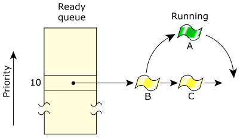

A timeslice is the period of time assigned to every round-robin thread. When it has consumed its timeslice, a thread is put at the end of its ready queue and the next READY thread at the same priority level is given control.
A timeslice is calculated as:
4 × ticksize
If your processor speed is greater than 40 MHz, then the ticksize defaults to 1 millisecond; otherwise, it defaults to 10 milliseconds. So, the default timeslice is either 4 milliseconds (the default for most CPUs) or 40 milliseconds (the default for slower hardware).
Apart from time-slicing, the round-robin scheduling method is identical to FIFO scheduling.